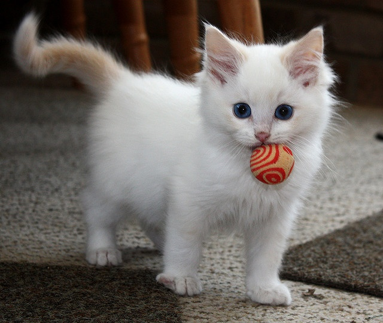

CATS

Cats sometimes don't get the credit they deserve.They are often
seen as solitary, aloof creatures.But this can be far from the truth.
Cats can thrive in a family with children,and can even learn to
play games that are traditionally associated with dogs,such as
fetch.Cats love to play. They are quite acrobatic too especially
when we take out a toy fishing pole or a cat dancer toy.They will
leap,run,and pounce on the toy, which is great fun to watch.A cat
purr is one of the most delightful sounds.Children often squeal
when they hear it.Cats love to be pet, held,and cuddled.Plus,they
are extremely loyal.Giving them a bit of attention,and we'll get a
lot of love in return.We can leave a cat home alone for a few
hours,since they don't need to be walked. However, they do need
attention, love, and care. If we're going away for the weekend or
longer,it's important to hire a pet sitter.Cats don't require
bathing.They are meticulous about grooming themselves.Only if
we have a long-haired cat, daily brushing is essential.Cats
don't require constant attention. They are happy just being
near us.They love to be pet, brushed, and fed. Yet we won't
have to dote on them all day.We can teach a cat to come when
called, to not scratch the furniture, and to retrieve a toy.
Just like clicker training with dogs, we can teach cats with
a clicker.It's a good idea to purchase a cat training video or
book that we can watch or read together as a family before you
get our cat.If we have an active lifestyle,work long hours, or
have the kids in after-school programs, then two cats are better
than one. They easily entertain each other.We will still have to
devote time to caring,playing, feeding, and brushing them.Cats
don't need a lot of space to thrive. As long as you can fit their
essentials, like litter boxes whichis one box per cat plus one extra.
Over the course of their lifetimes, cats are generally more
affordable than dogs.Not only are cats much safer indoors,
but they're perfectly happy perched next to a window or curled
up in a sunny spot on the couch.Simply crack a window for some
fresh air and she'll be totally content watching birds and bugs
all day long.Cats certainly do make some noise especially at
night,when many cats are most active meows and purrs tend to be
pretty quiet.It goes without being said that meowing and purring
is super cute, but the coolest part is that after a while, we'll
begin to recognize what our cat's meows actually mean; we'll
learn how to differentiate a meow that means"I'm hungry"from
a meow that means"Cuddle me, human!".Once kittens are
weaned from their mothers and have learned the basics of
using the litter box, they can be left at home unsupervised
during the day.While we should never, ever let our cat eat
a bug or mouse he catches,a pest-free home is just one of the
many benefits of owning kitties. What's more, our cat's scent
alone can keep rodents away from your house. If rodents detect
a hunter in the home, they're far less likely to shack up.
Cleaning out a litter box is a easy task.Cats are naturally
very clean creatures--and one of their instincts is to bury
their pee and poop. Cats are essentially self-cleaning machines.
We may want to groom her with a brush every once in a while
and definitely clip her nails as needed, but otherwise,cats
do a very good job of keeping themselves clean.It's common
knowledge that ancient Egyptians worshipped cats.
PREVIOUS
NEXT
HOME PAGE